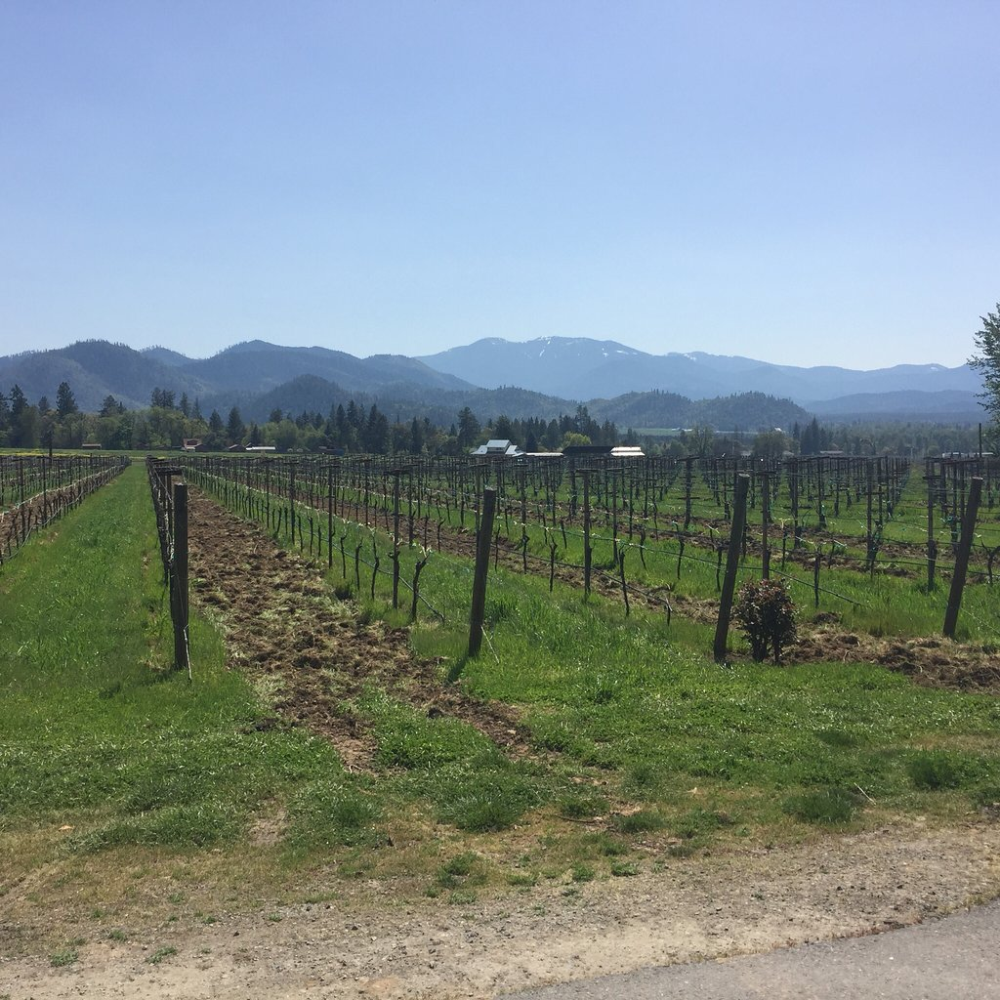
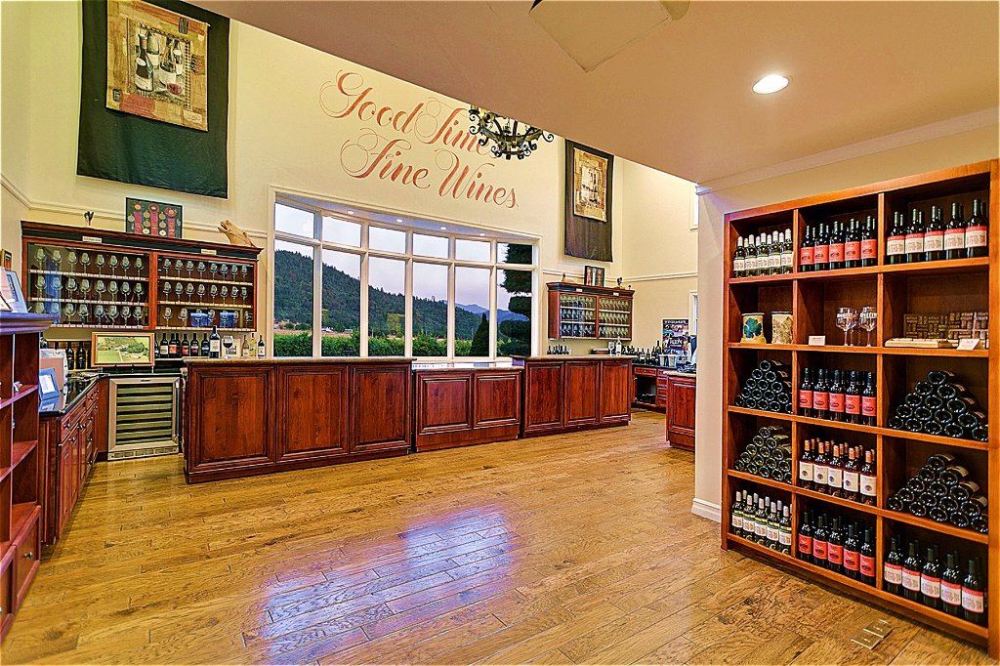
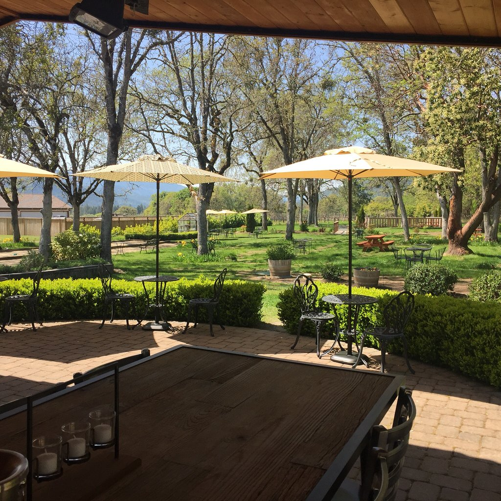
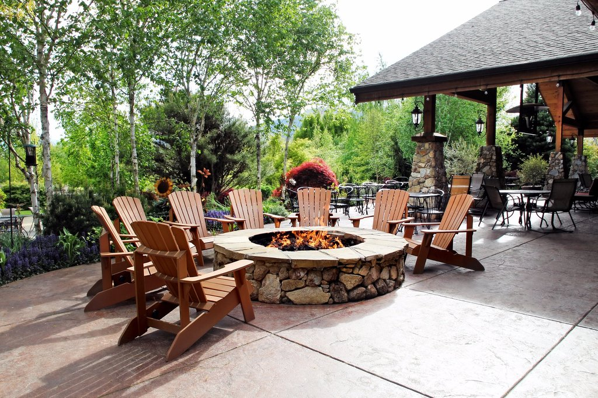
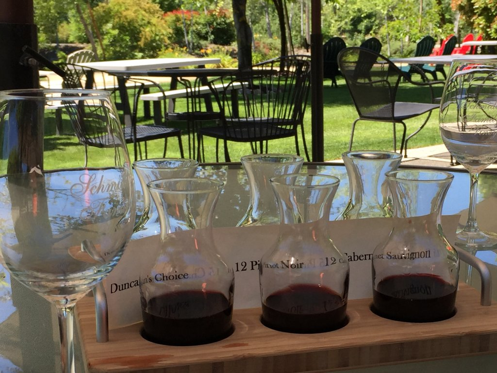
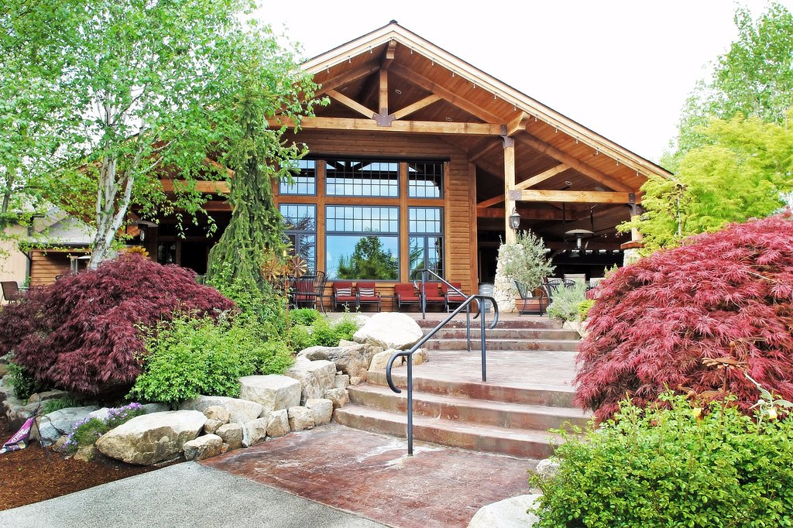
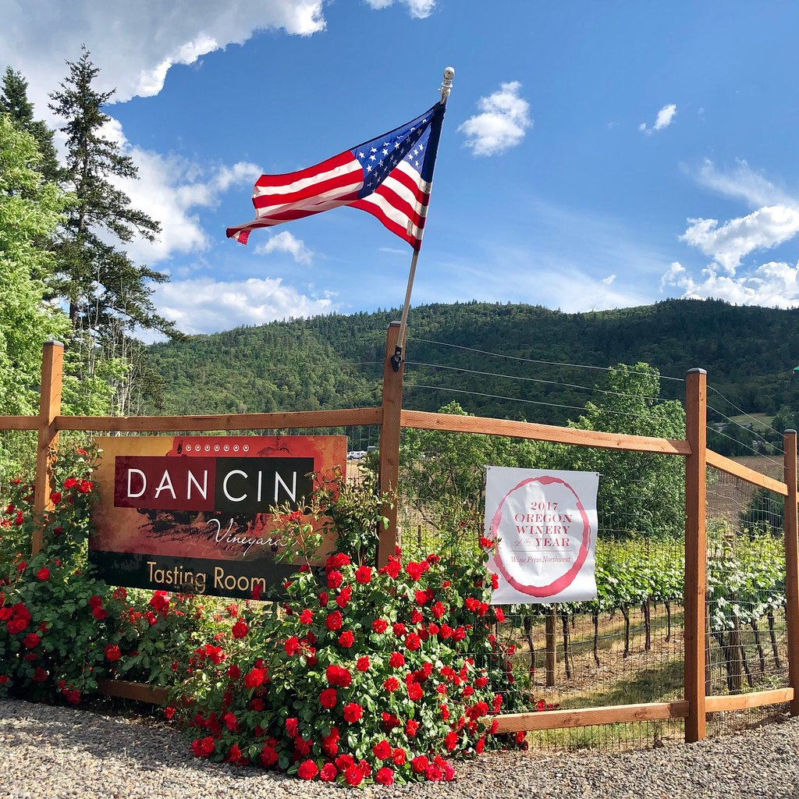
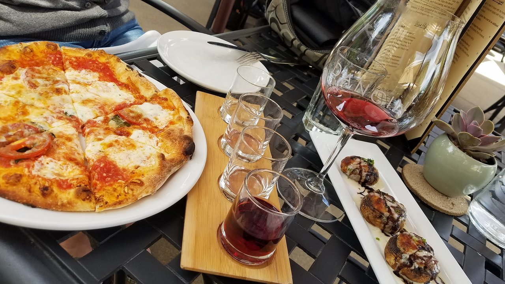
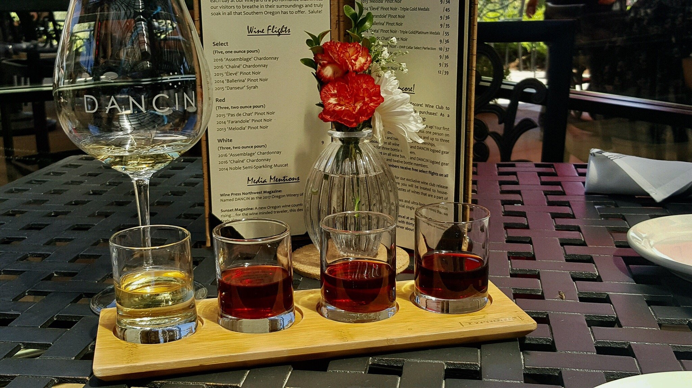

Troon Vineyards
One of the first stops we made in Applegate Valley was Troon Vineyards. This Vineyard is one of our favorites to visit in the Applegate Valley. The scenery and property is beautiful and the wine is amazing. A big thank you to Miranda at Troon for being so helpful and amazing with introducing us to all the wines this vineyard has to offer. I was instantly sold on becoming a member!
Surrounded by the dramatic, lush green splendor of the Siskiyou mountains, Troon Vineyard is located in one of the most beautiful wine regions anywhere, the Applegate Valley. What you'll find at this Applegate Valley winery tasting room are wines as compelling as the views. The Troon tasting room team could not be more friendly and passionate about thier wines and sharing them with you!
Surrounding the tasting room is a beautiful lawn and gardens that are perfect for picnics or just sipping a glass of our wine as you soak in the natural beauty of the Applegate Valley.
Troon Vineyards is centrally located between Grants Pass, Medford and Jacksonville and just a half-hour drive from I-5. It would be hard to imagine a more perfect day than packing a picnic and visiting Troon and the neighboring wineries in the Applegate Valley. Troon vineyards are all LIVE and Salmon Safe certified and are on a quest to become biodynamic certified.
 Troon is a must visit when visting Applegate Valley wine country
Troon is a must visit when visting Applegate Valley wine country
Schmidt Family Vineyards
Our next stop on our tour of Applegate Valley was Schmidt Family Vineyards.
What stood out to me the most was the ambience and the scenic open area. We visited this winery twice, once during the day and once at night and I can't decide wheather Schmidt Family vineyards is more beautiful by day or by night? One can give you a checkmate argument for each side.
The grounds are beautiful, the building built with great attention to detail, and the location is stunning. Inside the tasting room you have an amazing picture window to enjoy the view. There is ample seating available outside to sit in the sun and enjoy the view.
 Schmidt Family Vineyards beautiful by day or night.A family owned and operated winery, Schmidt Family Vineyards provides award winning wines and incredible scenery to its visitors. Stroll through the beautiful grounds after enjoying a pizza straight from the wood-fired pizza oven or any other food option from the lite menu. Family friendly and dog friendly (dogs must remain outdoors). Open daily from 12-5pm and during summer months open late (8pm) on Friday nights with live music.
DANCIN Vineyards
Dancin Vineyards is a must in Southern Oregon. The property is beautifully landscaped with unique foliage and ponds among the vineyards.
DANCIN is a love story. It is the marriage of science and art. The pairing of delicious food and fine wine.
DANCIN is a family owned, artisan producer of Pinot noir, Chardonnay, Syrah, Barbera and Port from a collection of three unique vineyards cradled along the forested foothills just above the gold rush community of Jacksonville, Oregon. Situated in the vineyard, and located just minutes from Ashland and Medford, the tasting room is the perfect setting to drink in the views of Table Rocks, Mt McLoughlin and the Rogue Valley while savoring the fabulous selection of fine wines, artisan wood-fired pizzas tableside!
Overall, Dancin Vineyards is a gorgeous vineyard with very good restaurant, a relaxing patio, excellent wines, both red and white, and amazing food.